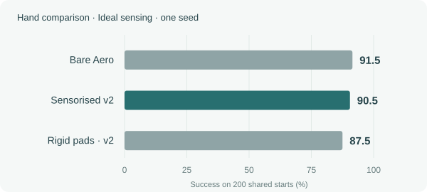
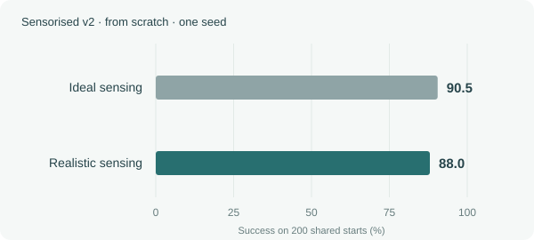
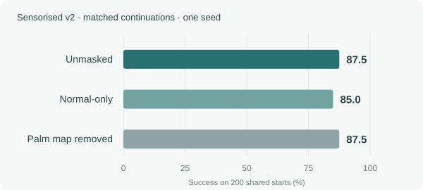
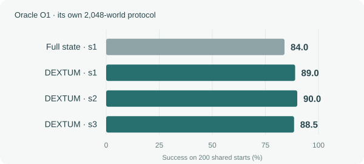

Cube reorientation in simulation. Accepted model v2; shared 200-start evaluations.
01 / The hand
What does adding the kit cost?
The hand performed similarly with the kit.
Correcting the model’s friction setting removed most of the apparent hardware penalty and supported keeping the kit’s current geometry.

Full-budget, from-scratch training; one seed per arm.
With corrected pad friction, the sensorised hand scored 90.5% against 91.5% for the bare Aero in single-seed runs. A registered check traced the earlier 17.5-point loss to a model parameter, giving no evidence-based reason to change the kit’s geometry.
Realistic sensing kept performance close to ideal.
Adding the expected sensor noise and delay left cube-turning success close to the ideal-sensor result.

Model v2; 108.1M steps from scratch; one seed.
Realistic sensing reached 88.0%, compared with 90.5% under Ideal sensing on the same hand. The 2.5-point difference was not significant in this paired comparison (p = .383).
Knowing whether contact exists and how hard the hand presses retained most of the full sensor suite’s performance.

Matched 20.3M continuations; one seed; p = .424 / 1.0 against unmasked.
Normal force with contact detection scored 85.0% against 87.5% unmasked, while removing the palm map preserved 87.5%; neither difference was significant. This informs the sensor brief before fabrication, while shear and slip requirements for holding still need measurement.
Touch versus no touch · three seeds
Model v2 · Realistic sensing · three seeds · matched 20.3M warm starts · 200 shared starts
Seed
C-touch
C-no-touch
Gain (points)
Paired p
1
83.5%
74.0%
+9.5
0.004
2
83.5%
83.0%
+0.5
1.000
3
83.0%
74.5%
+8.5
0.019
Mean +6.2 points; 95% seed interval −6.1 to +18.4. A seed-dependent benefit, not demonstrated touch necessity on rotation.
A policy using DEXTUM’s structured description reached the full-state benchmark across three training runs.

O1’s separate 2,048-world protocol; 108.1M steps per arm.
Structured DEXTUM inputs reached 89.0 / 90.0 / 88.5% against 84.0% for one full-state seed, meeting the registered sufficiency threshold on cube rotation. The full DEXTUM inputs include pose and velocity; the separate contact-only ablation scored 85.0%.
This meets the registered within-five-points criterion; superiority over the reference is not established (seed-1 p = .0755). Structure added 6 points over the information-equivalent flat control at seed 1 (p = .023), below the registered 10-point bar.
Describe manipulation through contacts between hand elements and object patches, express actions as bounded transitions, and compose those transitions into skills. DEXTUM brings that representation together with a physical reference for contact dynamics and a tactile kit with a common data format—toward skills that can be learned, checked and transferred across objects and hands.